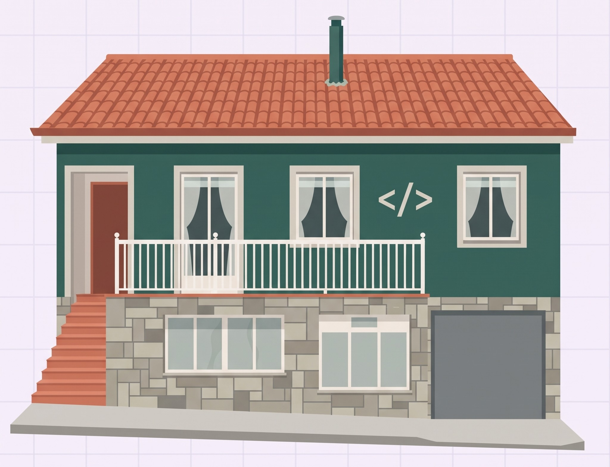
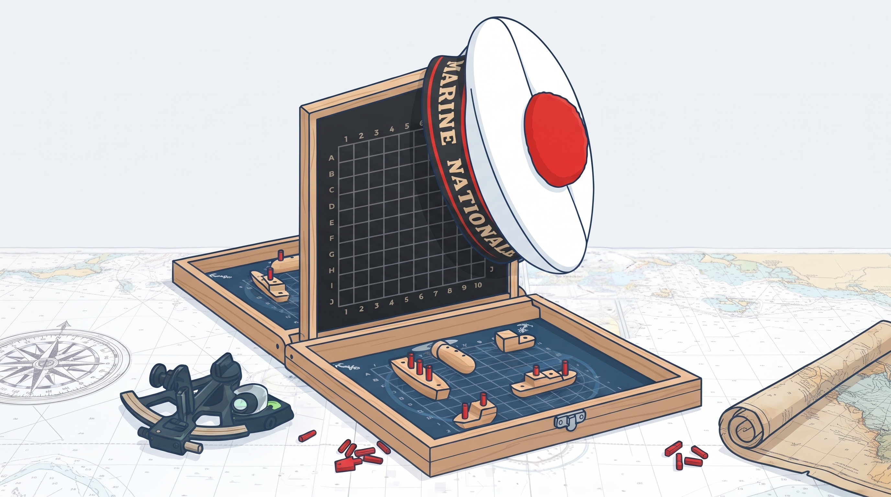
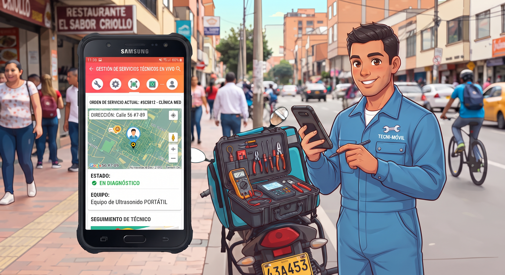

Web de mi casa rural
Sitio web con información del alojamiento, galería de imágenes y reservas online.
- WordPress
Portfolio personal · Desarrollo web
Estudiante de Desarrollo de Aplicaciones Web. Me interesa el mundo de la programación y el desarrollo web, y disfruto aprendiendo nuevas tecnologías. Aquí tienes mis proyectos, mi experiencia y mi formación.
// lo que he construido

Sitio web con información del alojamiento, galería de imágenes y reservas online.

Juego naval en Java con interfaz gráfica, turnos, flotas aleatorias y sistema de impactos.

Aplicación desarrollada en Java para la gestión, control y seguimiento de pedidos de comida a domicilio.
// dónde he trabajado
jul 2026
Oxer Sport
Montaje, preparación de espacios y apoyo en tareas logísticas para eventos.
sept 2025 - abril 2026
Atlético Arteixo
Gestión de equipos y desarrollo deportivo.
// de dónde vengo
2025 – actualidad
Liceo La Paz
2023 – 2025
I.E.S de Sabón
2019 – 2023
I.E.S Manuel Murguía